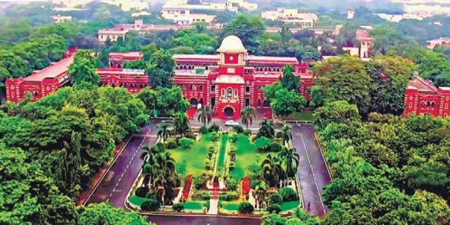

Anna University was established on 4th September, 1978 as a unitary type of University. This University was named after Late Dr.C.N.Annadurai, former Chief Minister of Tamil Nadu. It offers higher education in Engineering, Technology, Architecture and Applied Sciences relevant to the current and projected needs of the society. Besides promoting research and disseminating knowledge gained therefrom, it fosters cooperation between the academic and industrial communities.
The University was formed by bringing together and integrating four well known technical institutions in the city of Madras (now Chennai) namely,
College of Engineering (CEG) (Established in 1794)
Alagappa College of Technology (ACT) (Established in 1944)
Madras Institute of Technology (MIT) (Established in 1949)
School of Architecture & Planning (SAP) (Established in 1957)